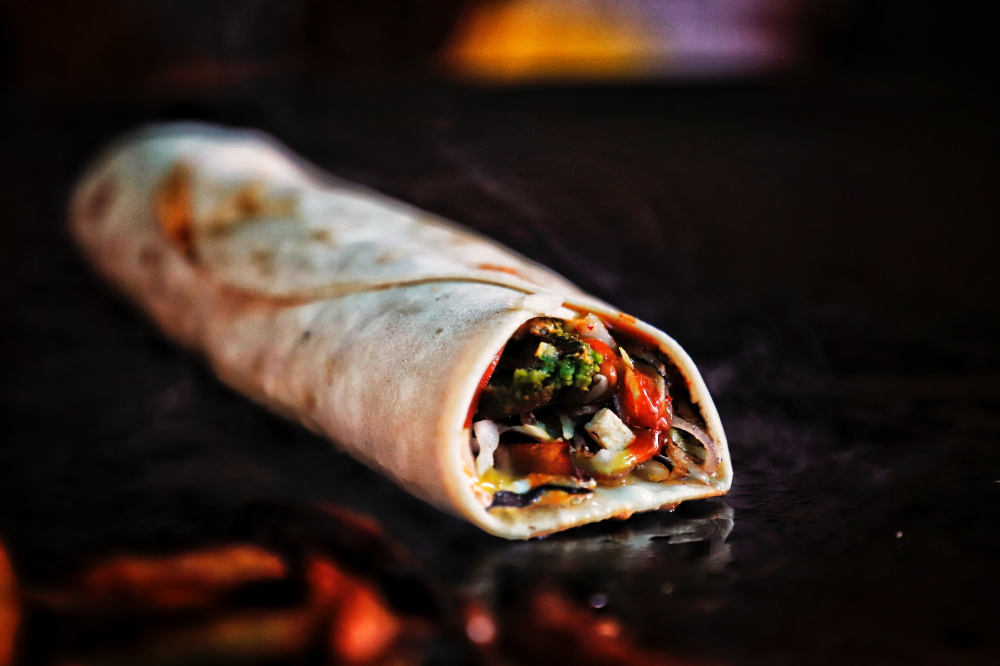

Burrito

Description
This is the best bean burrito ever!
Ingredients
- 1 (10 inch) flour tortilla
- ¼ cup vegetarian refried beans
- 1 slice American cheese
- 1 pinch ground black pepper
- 1 teaspoon low-fat sour cream
- 1 dash hot pepper sauce
Steps
- In a small pot heat the refried beans until they are heated through, approximately 5 minutes.
- Warm the tortilla in a dry frying pan over medium-high heat.
- Lay the burrito on a flat surface. Place the refried bean in the center of the burrito, layer the cheese, pepper, sour cream and hot sauce over the beans. Roll the tortilla so that the mixture is wrapped in the center. Serve warm.